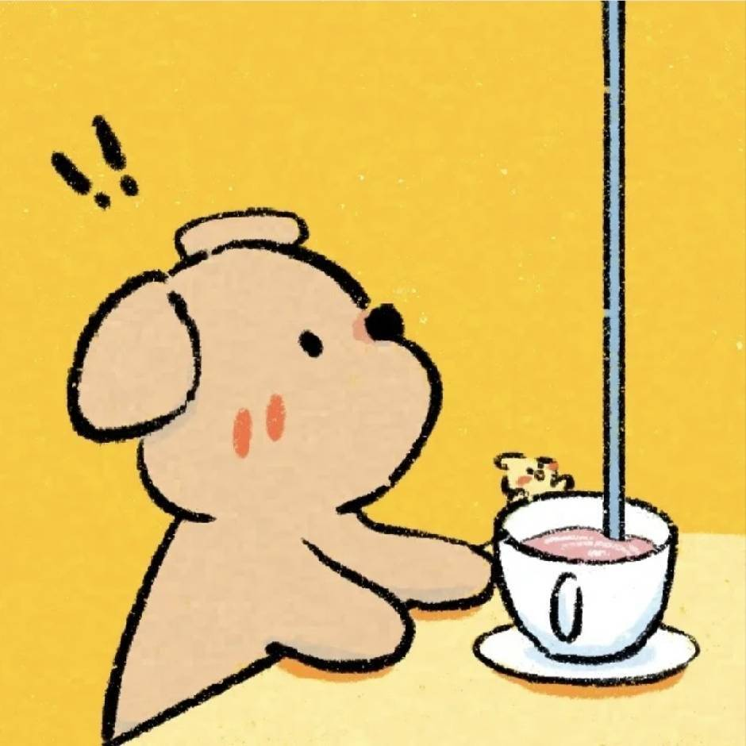
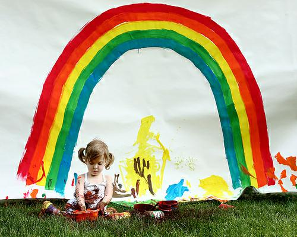
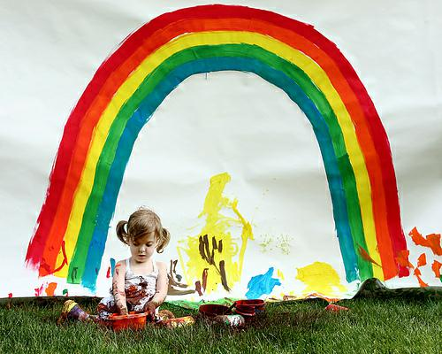
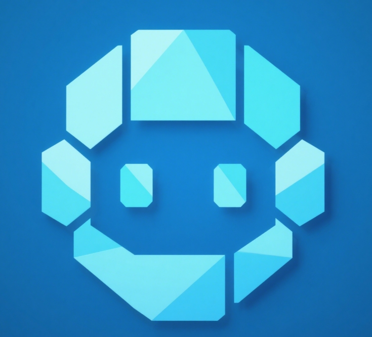

Please describe the following image and answer the related questions:
 1. What objects are present in the image?
2. What is the main activity happening?
3. Provide a short caption for this scene.
 1. What objects are present in the image?
2. What is the main activity happening?
3. Provide a short caption for this scene.

The image shows a group of people having a picnic in a park. There are baskets, food, and
drinks
on a blanket. The main activity is enjoying a meal together outdoors. Caption: "A joyful
picnic
in the sunny park."